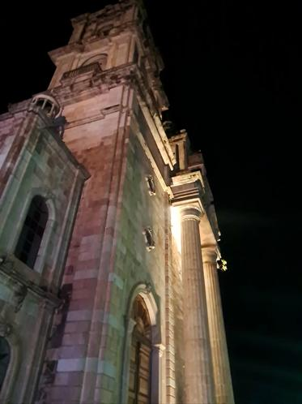
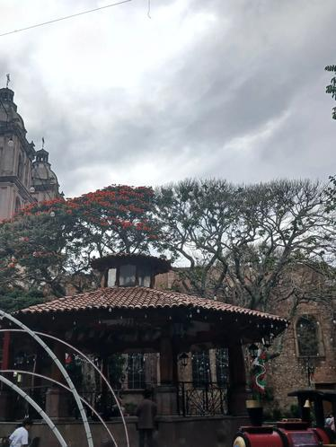
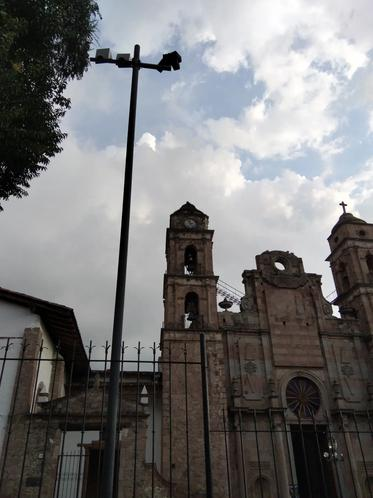
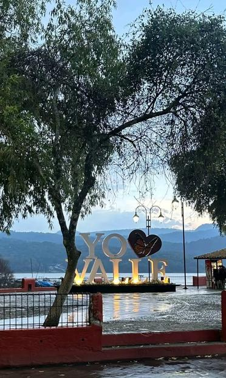

"Lugares más bellos de Valle de Bravo"

"Tiene una torre alta de piedra, arcos y columnas. Por la noche, su fachada se ilumina con luces de diferentes colores.."

"Kiosco con techo de tejas rojas, barandales negros y árboles grandes que dan sombra."
"Hermoso atardecer que se ve reflejado en el lago, creando un ambiente de paz."
>
"Tiene una fachada sencilla de estilo colonial, muros de piedra y una arquitectura antigua."
"Tiene un hermoso paisaje de las montañas y el lago de noche, verlo tranmite calma y nostalgia."

"Son letras gigantes de color blanco con un corazón rojo decorado con una mariposa monarca, están sobre una base circular con plantas y ofrecen una vista de la presa y las montañas." Regresar